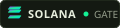

Autonomous AI Browser Automation for Modern Business
Run real local Chrome automation or zero-cost simulated sandbox missions. Designed for SMEs, agile agencies, and enterprise automation with zero cloud locks and strict data privacy.
Experience Browser Orchestration in Real-Time
Test Tabvento's 4-phase deterministic execution pipeline directly in your browser. Choose a preset or write a custom goal.
Compose Mission Draft
24 Production Mission Examples
Pre-built automated workflows for small businesses, agencies, and enterprise operations. Click any mission to load it directly into the simulator.
Solana Activation Gate ($88+ USD)
Simulated Demo Mode is 100% free with zero keys. To unlock Live Browser Mode with a real local Chromium browser, Tabvento verifies a contribution on the Solana Mainnet.

Minimum $88 USD · No Maximum LimitHow On-Chain Activation Works
-
1Send Contribution: Transfer ≥ $88 USD (in native SOL or USDC) to the official Tabvento wallet on Solana Mainnet.
-
2Paste Signature: Copy your Base58 transaction hash from Phantom, Solflare, or SolanaFM and submit it below.
-
3Instant RPC Verification: Tabvento queries confirmed on-chain transactions and unlocks permanent local Live Mode in SQLite.
3HvUMCUSSHEdtA35UuD4J7mbgpTxJ7LgT2X7GfdzvBdm
Interactive Signature Verifier
Test the on-chain signature verification simulation or check your actual transaction status.
Direct AI Model Provider Integration
Tabvento connects directly to your preferred AI model provider. API keys stay in your local .env file, never exposed to browser frontends or external servers.
OpenAI
Industry-standard reasoning and vision for complex multi-step browser interactions.
OPENAI_API_KEY=sk-...
Anthropic Claude
Exceptional coding, document parsing, and agentic tool use for long web sessions.
ANTHROPIC_API_KEY=sk-ant-...
Google Gemini
Blazing speed and expansive context windows for high-throughput browser tasks.
GOOGLE_API_KEY=AIzaSy...
Local Ollama
100% private, zero external API costs. Runs locally via loopback endpoint.
http://127.0.0.1:11434/v1
OpenAI-Compatible
Universal adapter for custom self-hosted inference servers and third-party gateways.
TABVENTO_COMPATIBLE_API_KEY=...
Local-First Architecture & Privacy Boundaries
Built with zero cloud dependencies, strict loopback HTTP security, and thread-isolated SQLite storage.
Security & Execution Boundaries
127.0.0.1 and rejects non-loopback Host headers to thwart DNS rebinding.
.env) and are never stored in SQLite or passed to browser DOM.
uv. No Docker daemons, background containers, or cloud subscriptions required.